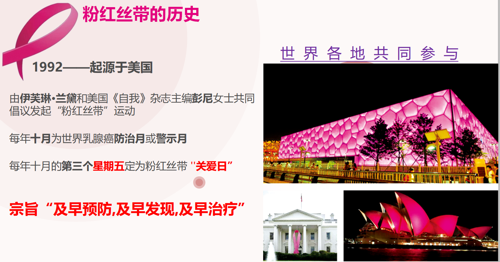
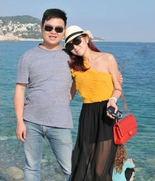
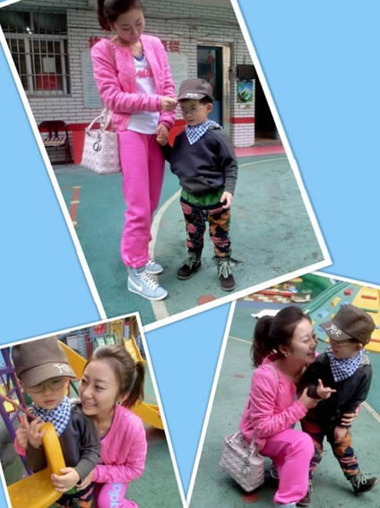
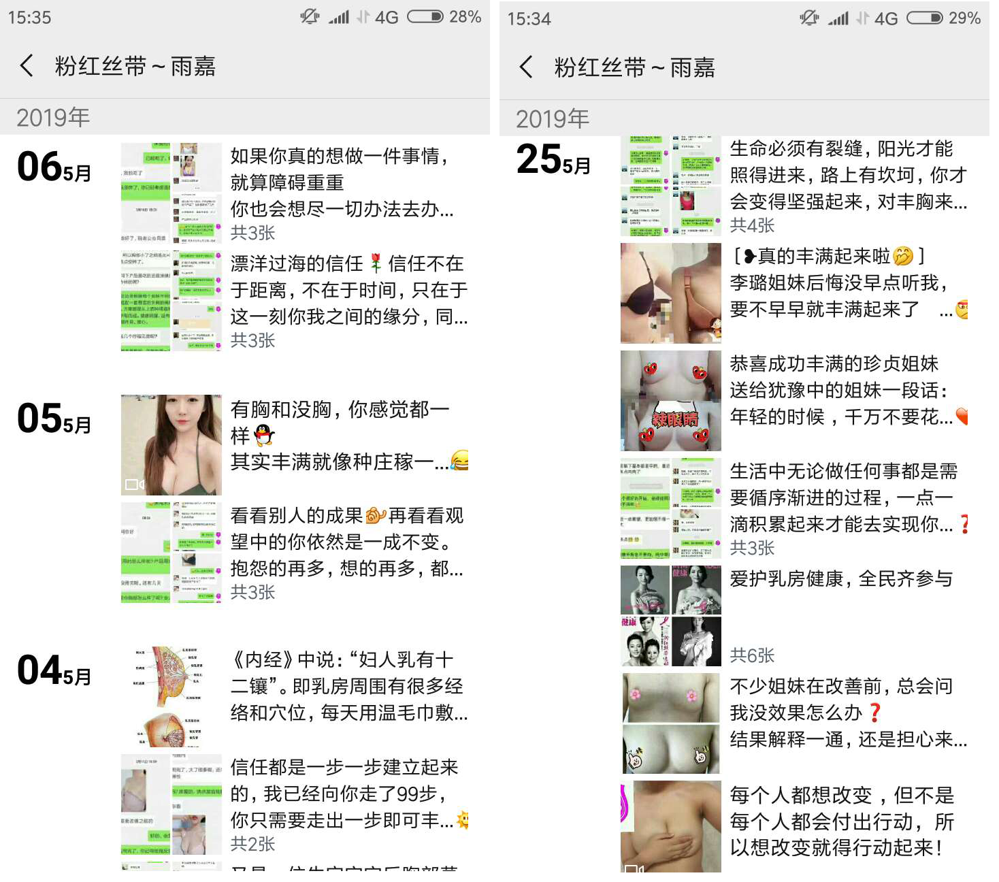
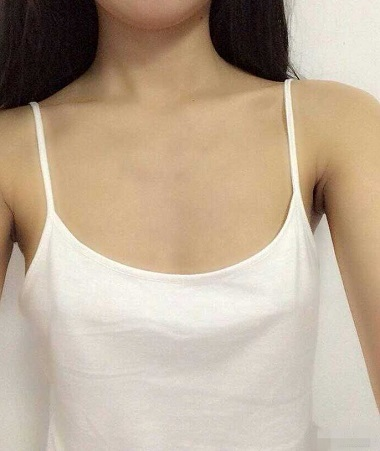

每个女人都会经历我这个阶段，为了你的婚姻幸福、为了你一生的幸福，女人一定要花几分钟仔细看看（一定不会后悔）
没有哪个女人不希望婚姻稳定家庭幸福，但是当你生完孩子哺乳完，下垂、松弛的胸部有可能会断送婚姻！这不是危言耸听，而是我的亲身经历。我叫刘婧，我的文笔不太好，之前一直没有勇气记录下来发布到网上，现在发帖，是希望可以给更多姐妹们提个醒，也希望姐妹们都知道：女人不是会洗衣，做饭，生娃，省钱，他就会在乎你。婚姻如果要幸福，一定要拥有坚挺的大胸才能提升女人的价值和地位，请听我的血泪控诉:

测一测你适合哪种丰胸方案
1.你的年龄是？
- 18岁-25岁
- 25岁以上
2.你想要什么罩杯？
- C杯
- D杯
- F杯
粉红丝带
“2019年” 爱护乳房，美不宜迟 ，时尚健康粉红丝带活动温暖启动，粉红丝带公益组织 “粉红丝带”作为全球乳腺癌防治活动的公认标识，用于宣传“及早预防，及早发现，及早治疗”这一信息，足迹遍布全球数十个国家，早在2012年，该公益组织便发现，东方亚洲人群的胸部小于世界平均水平，对于哺乳和家庭幸福都有巨大的影响，于是粉红丝带开始了对胸部营养补充及二次发育领域做出持续的研究，已帮助全国上万名平胸女性群体成功丰胸，在这一人群中有不少是产后妈妈，曾经丰胸失败者，先天性遗传胸小者等在她的指导下丰胸成功！

可笑：他居然说我平胸女人不旺夫！
我和老公是同学，他家里是农村的，刚开始在工地上做监工，当时一个月也就1000多点，结婚的时候我全家人都反对，但是我看中他人好，和他租住在不足30平米的房子里，日子虽苦却很真的很幸福。

甜蜜的爱情让我们的儿子出生了。初为人母我既紧张又幸福，全心全意的照顾着这个小生命。为了孩子好，我坚持母乳喂养。怀孕期间就从书上知道，母乳喂养，胸部很容易缩小下垂，果不其然，因为第一次欠缺经验，没有特别注意，宝宝还没有断奶，我就发现原来的胸几乎没了，再加上我喂奶时候的一些不良习惯，胸变的一大一小。人家说女人三十豆腐渣，加上胸围的缩水，衣服也不好搭，看上去像40多的大妈。
男人的感悟：老婆胸围扁平下垂，性爱完全没感觉，男性自尊深受打击
后来我居然发现他背着我找了小三！！！在我质问他的时候，他冰冷的脸上没有一丝的羞愧和悔恨，只无情的吐出了一句："真正把我推出去的是你。我职位越来越高，难免就应酬多，饭局上总少不了几个女伴，每次我想带你去，但是你看看你自己。而且我们老家有习俗，女人平胸不旺夫，怕你会影响到我以后的事业发展！"我怎么了？看着镜子里的自己，第一次认识到我原来已经这样了，怪不得老公会嫌弃我，对我没有兴趣。最可气的是我受不了这些“不可理喻的”习俗。我流着泪暗暗发誓一定要丰胸提升自己的价值。
咱们女人不应该原谅出轨的坏男人，所以我坚决的选择了离婚。

结婚5年为了家里我已经从少女俨然变成"大妈"了。
我为了家庭和孩子付出了那么多，他还出轨背叛我，我不离开他，就只有忍受，忍受不了，就只有等死。女人应该学会放弃，拽的越紧，痛苦的是自己。所以我选择了离婚，为的是让自己活的更精彩！
离婚之后我决心开始踏上丰胸之路！去了美容院买了乱七八糟的东西，结果根本没用。后来听说胸小是因为体内的营养物质脂肪蛋白质之类的不够，于是我开始四处搜集丰胸食谱，什么猪蹄汤，木瓜汤，蜂蜜，牛奶，连续吃了三个月，都要吃到吐了，结果胸部没有变化，反而体重一路狂飙，让我苦不堪言，从此就再也不敢狂吃了。后来在网上看到做胸部spa可以促进发育，于是我满怀期待又一次开始，结果...呜呜……钱是没少浪费，可是胸部依然没有改变，这一年是我最低谷的时候!
另外，我必须提醒大家，如果你想着靠网上找到的美胸小方法、小妙招、自制等方法丰胸，你所有的努力95%以上是白费的，这些我都试过了。
但是我不放弃，我始终相信，上帝为我关上了一扇门，一定会为我开另外一扇窗！
去年7月份在微信朋友圈无意中看到高中同学江文婷发的生活照，转变真的很大。以前的她也是不折不扣的平胸妹，还被戏称为"小哥"。以为那只是P过的，毕竟这年头谁敢真晒素颜照啊！就没往心里去。之后却一直看她三天两头在晒自己的美照，那股得意劲！终于忍不住去问问，那真的是你吗？视频求证下？天啊！这真的是她吗？简直让人不敢相信。胸部饱满达到了C罩杯，身材变得更性感了。江文婷的丰胸成功让我既兴奋又羡慕，马上请教她是如何丰胸的。
左边是以前的文婷，右边是她丰胸成功后那令人羡慕的美胸！胸大的女人确实有价值有魅力。
文婷一听，说："实话告诉你吧，我之前认识了一位丰胸达人，叫雨嘉老师，是她帮我的，她教我的丰胸方法不用手术。她的微信里面有很多丰胸成功的例子，但因个人体质不同，丰胸效果不一，你去加她微信看看她朋友圈吧。"并嘱咐我丰胸一定要找雨嘉老师这样的，因为腾讯女性网都有访问雨嘉老师的新闻报道，主要是安全和靠谱。
我琢磨：在丰胸路上有个好的达人指导很有必要，总比自己瞎碰强。雨嘉老师既然能受到腾讯网这么大的媒体的专访，肯定有自己的厉害之处，况且同学也是在她的帮助下丰胸成功的，这就是活生生的例子啊！我毫不犹豫的打开微信添加了。我看了雨嘉老师的朋友圈，每天都有更新一些专业丰胸知识，讲得挺科学的，且不少人反馈，通过她的指导丰胸成功。说话什么的，感觉很实在，不像有些人，吹得天花乱坠。

雨嘉老师的微信朋友圈每天都会更新姐妹们的丰胸反馈和一些胸部保养知识，收益很大，可以让姐妹们少走弯路。
原来找对方法，健康丰胸并不难！用这招暴涨胸围，男人嗷嗷叫！这期间按照雨嘉老师教我的膳食丰胸法，不需要任何繁琐的丰胸按摩、瑜伽等，不需要任何的丰胸仪器，不需要开刀隆胸，只需按她的方法每天坚持做，很快胸部就有明显变化，她还经常给我亲自指导。想丰胸的姐妹添加雨嘉老师。可以详细了解这个丰胸方法，这里就不详细介绍啦。
我的丰胸日记记录第1天

这个是我第一天的时候拍的照片，生完宝宝喂奶过后就一直是这样了，也就A罩杯这样子！
我的丰胸日记记录第15天
第15天的时候，每天早上起床会感觉有点涨涨的，穿上以前的内衣有点穿不下了，有点往外撑，快包不住了！
我的丰胸日记记录1个月
1个月的时候，乳沟很明显了，一只手快托不住，刚开始闺蜜都问我胸怎么突然变大了？我都含糊其辞的说内衣买了加厚的骗过去了！
我的丰胸日记记录2个月
到2个月特意没穿内衣拍的，已经有C罩杯了，很撑衣服，衣服也超级容易搭配，非常满足！
上面是我20多天左右的自拍照，胸部真的有一点点料咯，胸部下垂度有所提升，皮肤变得细滑有点手感啦。
丰胸贵在坚持，两个多月的时候我竟然达到了C罩杯，而且又挺又翘，外扩不对称现象也消失啦，呈现出完美的丰挺形态。而且我才知道女人戴胸围也是有讲究的，这些雨嘉老师都会正确的指导。雨嘉老师是我的大恩人，要不是她的指导，我的丰胸之路都不知道有多悲剧。
离婚后的生活更精彩，以前因为扁平的胸部从来没有穿过比基尼，也不敢去游泳馆或者海边，现在每次去都成了焦点人物了。
精彩评论
你的丰胸档案编号是""
加好友验证时填写""
雨嘉老师为你定制方案教你变大变美！